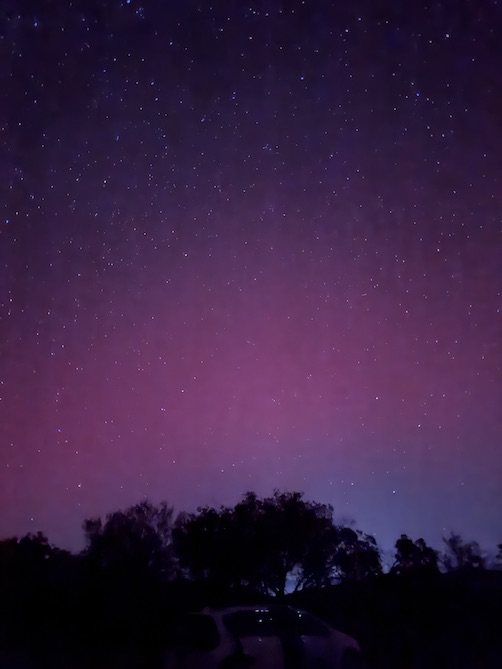
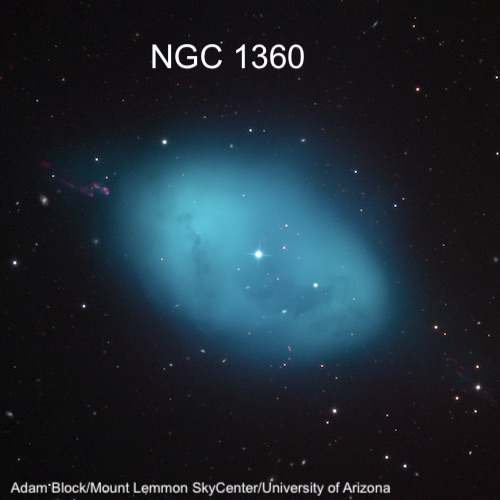
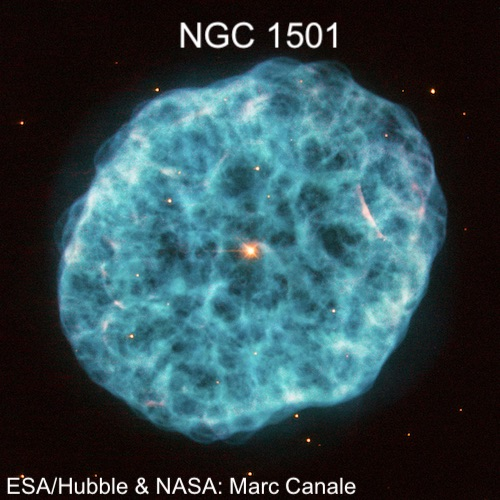
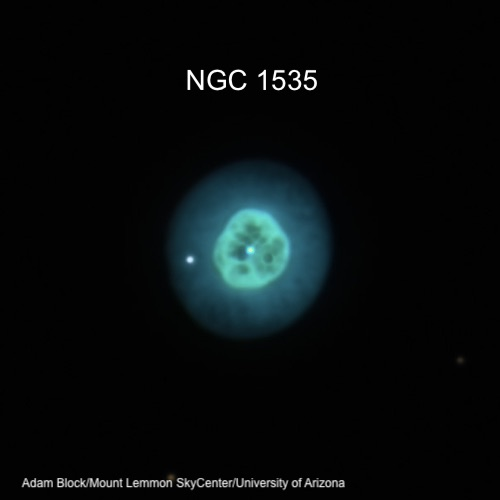
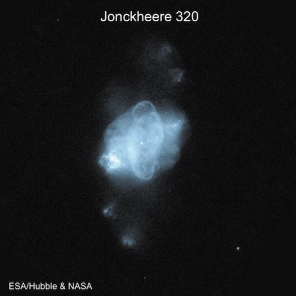
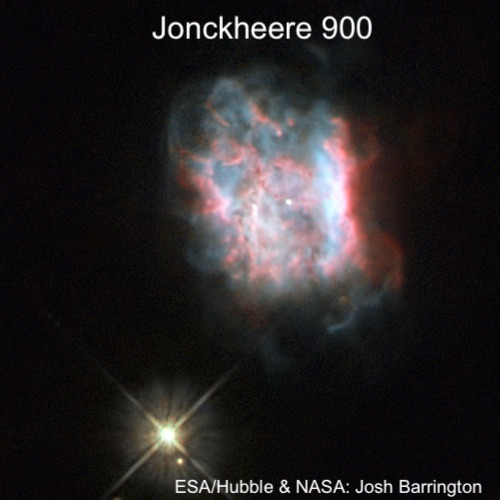
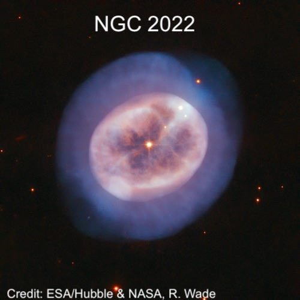
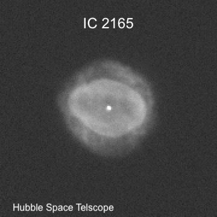
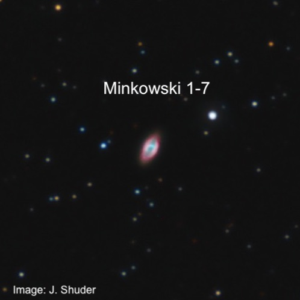

OR: Lake Sonoma on Jan. 19, 2026
I decided to take a chance on observing at Lake Sonoma last Monday (Jan. 19th), although the weather forecasts that had looked quite promising a few days earlier slowly degraded in terms of possible cloudiness, transparency and dew. I put out a tentative OI the day on Sunday and there was interest from several others as this night was, for all practical purposes, the last opportunity to observe in January in moon-free conditions. On Monday morning, Dan Durkin sent me note that the Sun emitted a strong X-class solar flare the day before, which was followed by a coronal mass ejection. This activity was predicted to likely trigger auroras as far south as northern California. An unexpected bonus!
Most weather models were predicting clouds by 11:00 at the latest (so likely 3-4 hours of observing) and below average transparency. The week before I observed a couple of nights at a darker site under perfectly clear skies with my 24-inch and focused mainly on galaxies. But with the possibility of early clouds I decided to take my 14.5-inch Starmaster and focus on moderately bright planetary nebulae. The reason was simple — assuming the seeing turned out steady, I can jack up the magnification above 500x (with tracking) and the sky background naturally darkens, increasing the contrast and the visibility of structural details.
The traffic heading north on 101 on Monday afternoon was light, probably due to it being a holiday for some (MLK). When I arrived at the Lake Sonoma lot (Lone Rock), Jim Molinari was setting up an 8-inch Schmidt-Cas, along with a MallinCam for EAA viewing. Within the next hour, Jim and I were joined by Mazen Ataya, Ziad Khoury and Muriel Holzer. Also in attendance were Pierre and Louise from Belmont, who came specifically to view and image the possible aurora.
As the sky was darkening around 6:30, I took a look at Saturn in the western sky, which looked pretty sharp (the rings have noticeably opened up a bit in the past month!) despite my mirror probably still cooling off. Rhea and Dione were seen on one side, with Titan way out on the opposite site. Finally, Tethys and possibly Enceladus were close in on the east side — both getting ready to transit I discovered later.
Neptune was only 2.5° from Saturn, so I swung the scope over to take a peak at the pale blue speck. It was resolved as a tiny disc just 2.2" diameter using 226x. Increasing to 395x, I immediately noticed a faint stellar object to the NNE. I showed the view to Ziad and Muriel and claimed the faint “star” was likely Triton, Neptune’s largest moon. Checking the next day at home confirmed it was 14th magnitude Triton at 16" separation to the NNE. Triton holds the distinction as the only major moon in the solar system which has a retrograde orbit and likely originated as a Kuiper belt dwarf planet. It was then captured by Neptune in the distant past. Finally, I took a peek at Uranus (also at 226x), which showed a crisply defined 3.7" disc about 5° from the Pleiades.
I finished the planet tour with Jupiter later in the evening, as I wanted to see the shadow transit of Io, which began about 9:30. When I took a look after 10:00, the detail in Jupiter’s belt was stunning at 226x in very good seeing. Io’s shadow was an extremely sharp black disc (perhaps 1.5” in diameter) north of the southern belt. Several of the other observers, including Mazen and Pierre enjoyed the view.
As far as the aurora…it created a fairly subtle reddish glow in the northern direction, but it was never impressive naked-eye in terms of color or had any structure. But on phone images, it looked pretty nice (my 10 second hand-held exposure). This was a relaxed, casual evening and I spend quite a bit of time sharing views with others. By 9:20 or so, two of large bands of clouds were crossing the sky and by 10:00 they were more extensive. Some dew started forming around 9:00, though it didn't really affect viewing as I kept my eyepieces and a filter in my observing vest. Al in all, it was a fun evening with a very high success rate since I didn’t try to many faint fuzzies until the end.

Besides the planetary nebulae below, I also looked at 13th magnitude IC 289 in Cassiopeia and 12th magnitude IC 351 in Perseus, but didn’t take notes. After finishing the dozen planetaries, I observed UGC galaxies in Camelopardalus for nearly an hour, but the clouds were creeping into the northern sky and I stopped around 11:30. Unfortunately, the aurora may have been gaining strength by this time, as observers in other states reported it really put on a show later in the night.
1) NGC 1360 in Fornax at 460” x 320”: excellent view at 122x using a NPB filter. The central star is fairly prominent, even with the filter inserted. It appears as a very large oval ~4:3 SSW-NNE, up to 6' in diameter. The disc is brightest in a wedge fanning out from the central star to the N or NNE.
NGC 1360 has an interesting discovery history by comet observers as its one of the brightest objects missed by William and John Herschel. Lewis Swift first discovered the planetary in 1859 with a 4.5-inch comet-seeker refractor but he didn't announce the observation until 1885. Two years later, Wilhelm Tempel (who discovered the Merope Nebula in the Pleiades) rediscovered it using his personal 4-inch Steinheil refractor from Marseille, though he didn't publish his observation either. Because it wasn’t known, Friedrich August Winnecke found it again 1868 with a 3.8-inch comet-seeker, as well as Eugen Block in 1879. So, there was some debate about who actually discovered the nebula first.

2) IC 2003 in Perseus at 7” x 6” appeared as a mag 11.5 blue "star" at 66x within a group of stars. There was a strong response to an OIII filter. Upping the mag to 224x showed a nice sharp disc, with a mag 13.5 star 18" to the SW. Best view was at 395x, which shows a stellar knot along the S or SE rim.
Rev. Thomas Espin discovered IC 2003 in January of 1907 using his 17.3-inch reflector. He wasn’t searching for comets, but rather new double stars and estimated a diameter of 5”. A couple of weeks later he measured a size of 6.9” x 6.35” which is remarkably accurate. This planetary is one of the final discoveries that made it into the IC II, which was published in 1908.
3) NGC 1501 in Camelopardalus is a medium-aged planetary with a complex filamentary structure (see the HST image). It has a diameter of about 1 light-year and a hot central star (between 110,000-134,000 K) of Wolf-Rayet type (WO4). Using 226x gave a great view: slightly elongated, ~1' diameter, with a very faint but clearly seen central star. The planetary was weakly annular with an irregularly brighter rim. 395x improved the view further: the interior appeared slightly darker surrounding the central star with a brighter rim at certain spots.

4) NGC 1535 in Eridanus ("Cleopatra's Eye”): One of my favorite planetaries, so I always take a look when it’s well placed. Using 395x produced a great view; the mag 12.5 central star is fairly prominent and the bright inner shell is slightly darker around the central star. The outer shell, which nearly double the diameter was easily visible, though much fainter.
William Lassell – who discovered Triton, by the way – observed NGC 1535 in January of 1853 using his 24-inch equatorial reflector. He was apparently quite impressed, calling it "the most interesting and extraordinary object of the kind I have ever seen. A bright well-defined star, perhaps 11th magnitude, right in the centre of a circular nebula, whose edge was the brightest part; and this nebula again placed upon a larger and fainter, concentric and equally symmetrical.”

5) J 320 in Orion is only 11” x 8”, but bright at mag 11.8. It appeared stellar at 66x and fuzzy at 122x, but it blinked strongly with an O III filter, so it was easy to identify. It was an obvious blue disc at 226x and easily took 566x due to its high surface brightness. At this power it had an oval shape about 3:2 ratio and was at most 10" diameter.
French double star observer Robert Jonckheere first catalogued J 320 as a double star in 1911 using his 13.7-inch equatorial refractor near Lille. He recorded the separation as 2.2" in PA 129.6° (mag 9.8/9.8). But while observing doubles during World War I with the 28-inch equatorial at the Greenwich Observatory on 22 Jan 1916, he noticed "...it appears with the larger instrument to be an extremely small bright nebula.” I’m not sure how he might have thought it was a double star originally.

6) J 900 in Gemini at 12” x 10" appeared stellar at 62x, but responded strongly to an OIII filter, so it was also easy to identify. At 158x, it looked like a soft blue "star", forming a "double" with a mag 12.5 star ~11" to the south. Increasing to 395x shows and obvious small disc with a fairly high surface brightness. The best view was at 566x as it seemed slightly oval.
When Jonckheere discovered J 900 in October 1912 he described it as a new planetary nebula showing two small nuclei (mag 9.8/9.8), which he measured as if it was a double star at 2.2" separation in PA 148°. In his 1917 double star catalogue he added the note: "With the 28-inch [Greenwich refractor] the diameter [of the PN] was measured 6", it appeared quite bright, and there seem to be three condensations or stars forming a letter V.” I don’t believe I’ve ever seen these condensations.

7) IC 418 in Lepus at 14” x 11” is sometimes called the Spirograph Nebula, based on the filamentary structure in this famous HST image. Some amateurs, though, call it the Raspberry Nebula, as the rim has a raspberry tint — quite unusual to see visually in a planetary. Using 566x in good seeing, the bright central star was continuously visible, surrounded by a high surface brightness disc with a slightly brighter rim. I didn’t notice the color which shows up best at much lower power.
IC 418 was not discovered visually, though. It was found by Williamina Fleming on an objective-spectrum plate taken in March 1891 in Peru. Mina described the H-beta line as "unusually large as compared with the line whose wavelength is 5007 [OIII], the visual spectrum differs strikingly from that of other planetary nebulae.” Using low power, this planetary does respond best to a H-beta filter — it’s one of the few!

8) NGC 2022 in Orion at 29” x 28” is a bright multi-shell planetary, just east of Orion's head. Using 395x gave an excellent view, showing a small (about 30”), slightly elongated planetary. The rim seemed slightly brighter towards the end of the major axis, giving a subtle annular appearance.
Once again, William Lassell made a detailed observation in January 1853 with his 24-inch equatorial reflector. He called it "a singular curdled-looking object, slightly and irregularly elliptical, with a sort of cordon [outer shell] running round parallel, but a little outside of its margin.”

9) IC 2165 in Canis Major at 9”x8" was picked up at 66x as a moderately bright pale blue “star" with excellent contrast gain when I “blinked" with an OIII filter. At 157x, it was clearly non-stellar and showed a nice small disc at 226x. Increasing to 395x, the roundish disc was ~ 10" in diameter. IC 2165 is situated in a rich star field 38' to the west of STF 903, a 6th mag star with a 10th mag companion at 23" separation.

10) Minkowski 1-7 in Gemini at 26” x 15" is a compact high-excitation bipolar planetary with a faint central star. It appeared as a 13th mag "star" at 66x, with a good response to an OIII filter. It’s situated just 1' SE of a mag 10.2 star. Increasing to 158x, it was small, but clearly non-stellar, perhaps 10" diameter. At 226x, the disc appeared moderately bright. Excellent view increasing to 566x, the disc appeared up to 15" across and slightly elongated.
